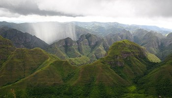

Puerto San Francisco es el puerto amazónico más cercano a la población de Villa Tunari, habitado por la etnia Yuracare, pescadores y navegantes. Los principales atractivos turísticos del lugar son la Pesca, Paseos en bote, Canotaje, Kayak, Safari fotográfico y Observación de la flora y fauna.Se encuentra ubicada en la provincia Tiraque, localizada entre los ríos San Mateo e Ivirizu en el Parque Nacional Carrasco. El clima en esta área es tropical cálido hiperhúmedo. Los meses más secos son de mayo a octubre, siendo efectivamente secos agosto y septiembre y la época lluviosa de noviembre a marzo.Divertido parque recreacional situado en la población de Chipiriri, a 7 kilómetros de Villa Tunari. “LA JUNGLA” diseñado entre los árboles con estructuras de madera, puentes colgantes y en medio de la espesura del bosque tropical, columpios de hasta 20 metros de altura.El Parque Machía, un Centro de Custodia de Fauna Silvestre de propiedad del estado, tiene una extensión aproximada de 38 hectáreas y está ubicado en Villa Tunari del Chapare, en el departamento de Cochabamba, cabecera de la Amazonia. El Centro alberga más de 500 animales, de más de 30 especies, incluso cinco amenazadas.

El parque Carrasco se encuentra en el Departamento de Cochabamba, en las provincias Carrasco y Chapare. Al igual que su vecino, el Parque Nacional Amboró, Carrasco cuenta con una exuberante vegetación, increíbles caídas de agua y una gran biodiversidad.El Parque Isiboro Sécure se encuentra entre los departamentos del Beni y Cochabamba. Es una región predominantemente montañosa, pero también cuenta con una extensa sabana. Ambos ecosistemas albergan una gran biodiversidad en flora y fauna.